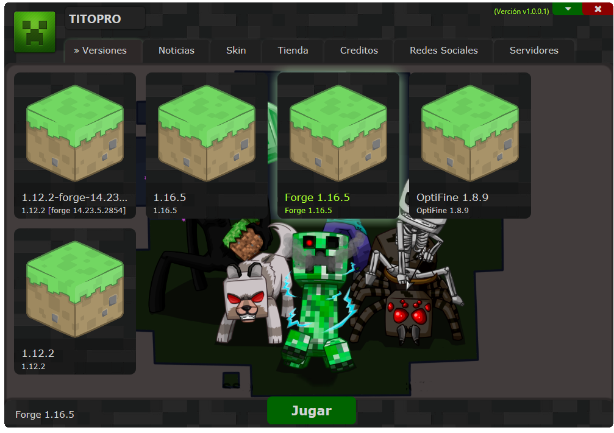
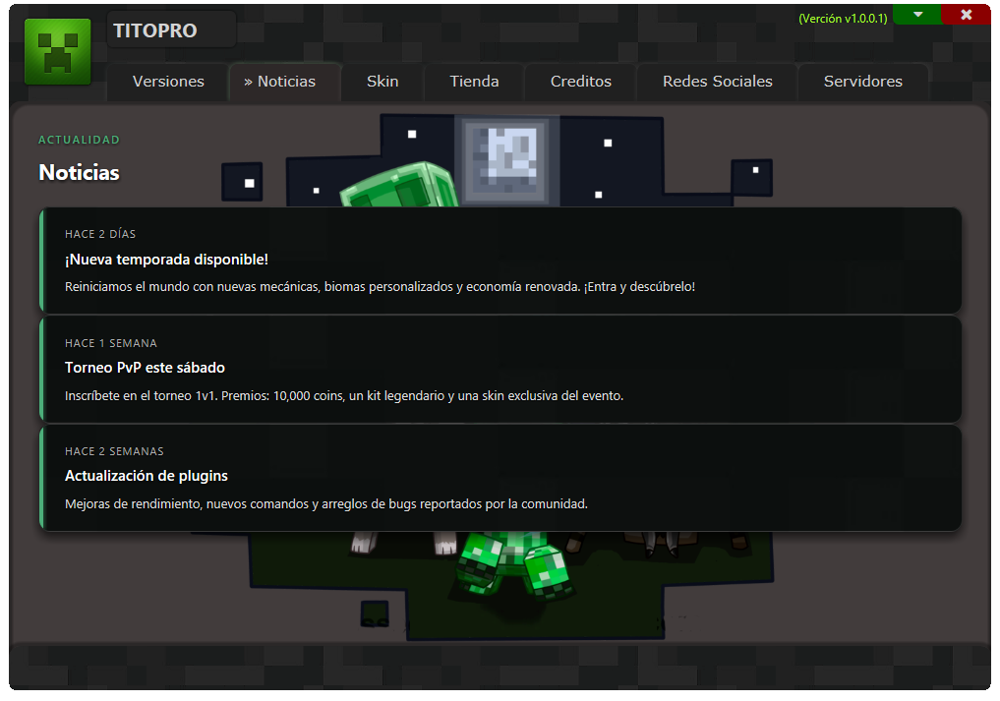
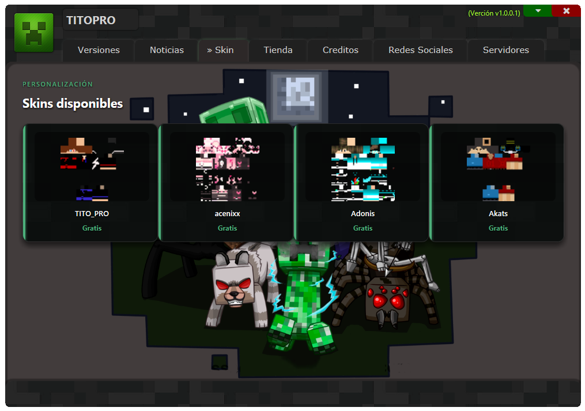
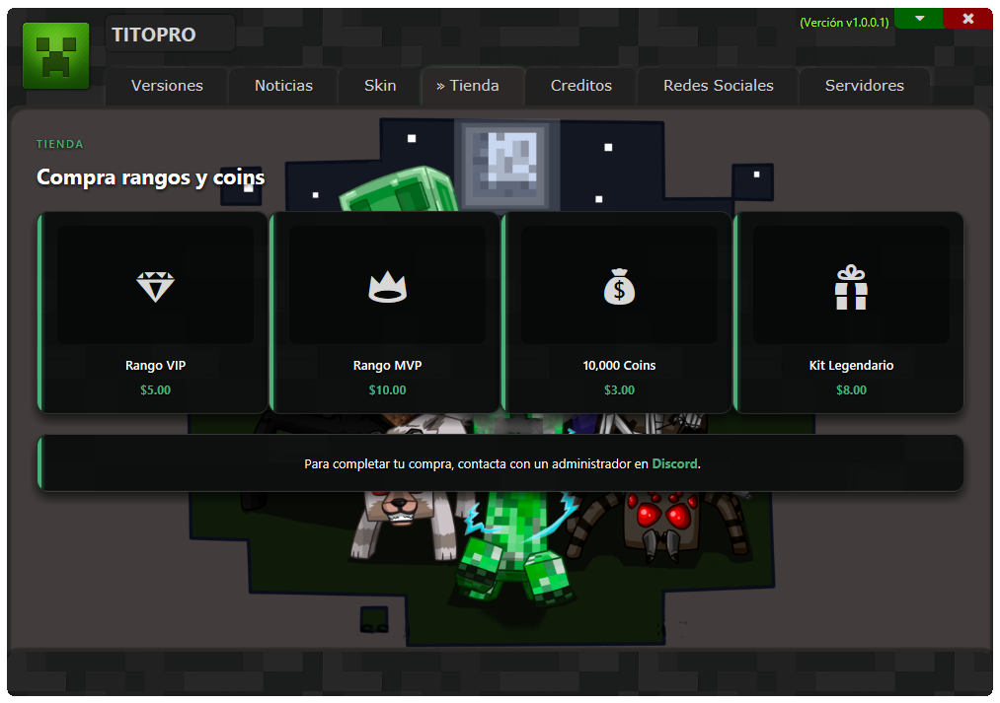
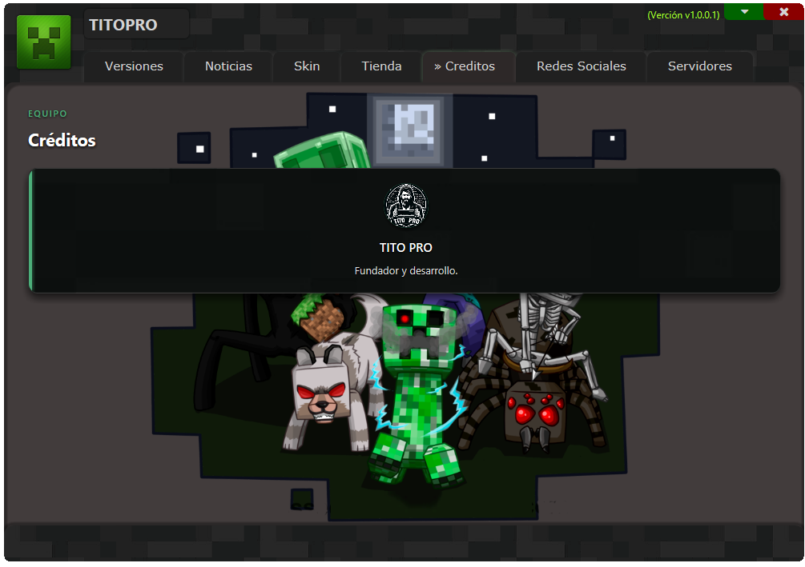
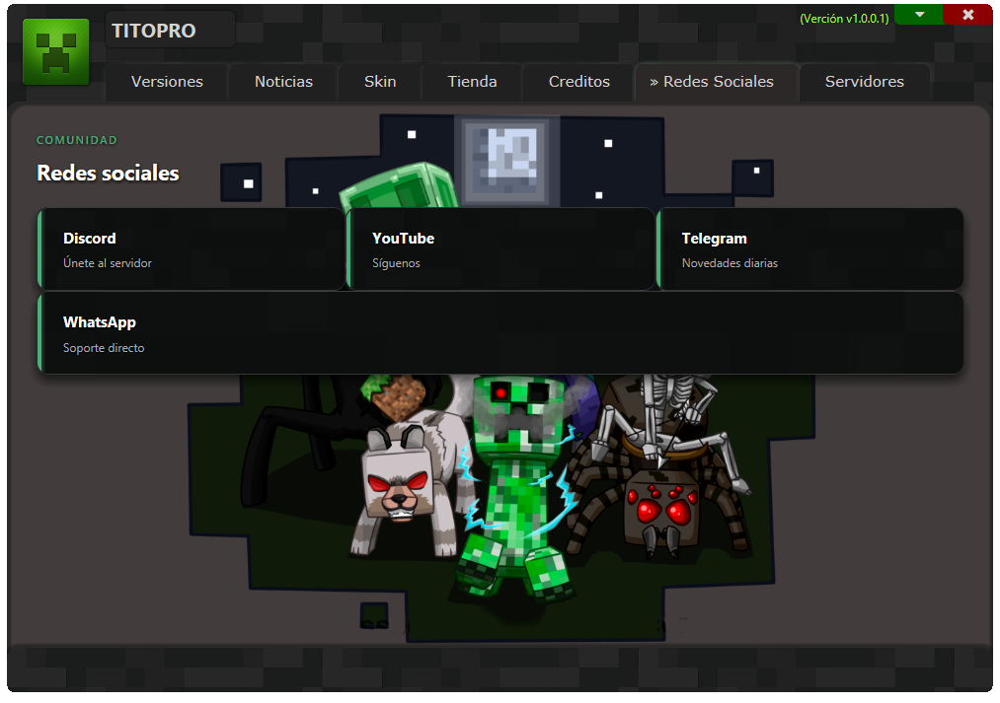
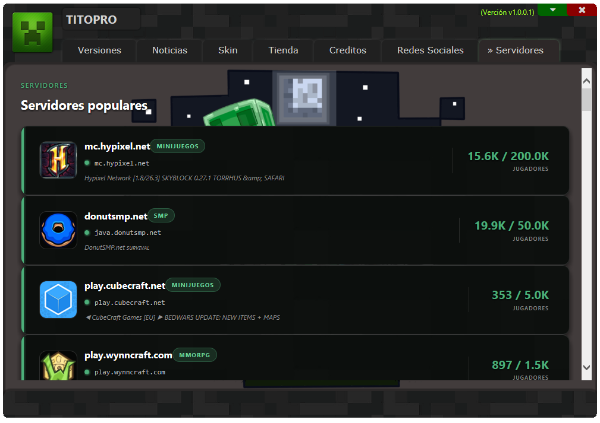

ULauncher es un launcher personalizado para Minecraft, desarrollado exclusivamente para el servidor J.R-Craft. Su objetivo es ofrecer una experiencia de juego más cómoda, rápida y segura desde el primer clic.
Características destacadas:
• 🔐 Compatibilidad: soporte para múltiples versiones del juego.
• ⚡ Acceso rápido: inicio optimizado para entrar al servidor sin complicaciones.
• 🛡️ Seguridad: conexión protegida y verificación de integridad.
• 🎨 Interfaz intuitiva: diseño pensado para que cualquier jugador pueda usarlo sin esfuerzo.
Con ULauncher, entrar a J.R-Craft deja de ser un proceso técnico y se convierte en una experiencia simple, moderna y confiable.






